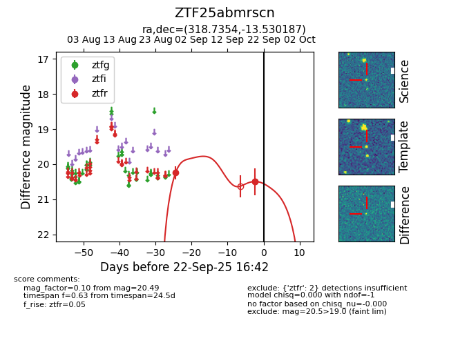
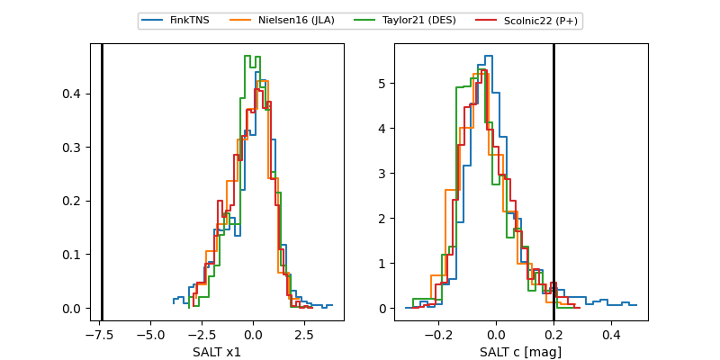

FINK: ZTF25abmrscn
Lasair: ZTF25abmrscn
ALeRCE: ZTF25abmrscn
ZTF25abmrscn (ztf,fink)
equatorial (ra, dec) = (318.7354,-13.53019)
galactic (l, b) = (36.6783,-37.86243)


last ztfr=20.49
2 ztfr detections